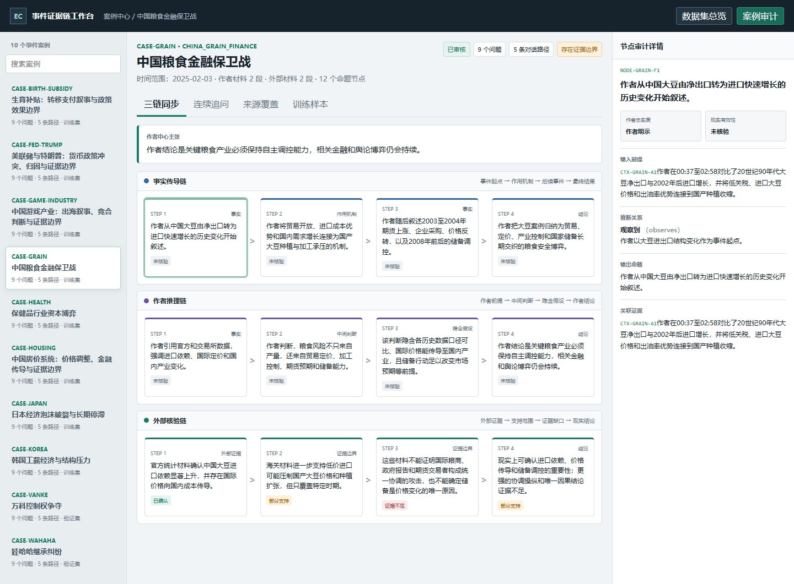
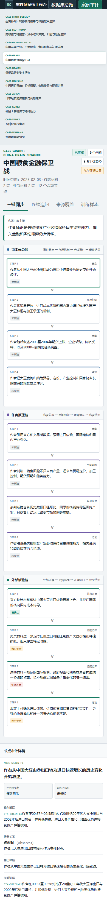

把 B 站财经视频（UP 主「巫师财经」）的口播内容，抽成以「原子命题」为单位的证据链， 再逐链组织成可审计、可追溯、可拒答的推理 SFT 数据集。 —— 核心卖点是「证据链 + 审计治理 + 拒答」，而不是普通问答对生成。
| 维度 | 普通视频转 QA | 本项目 |
|---|---|---|
| 内容单位 | 段落摘要 | 原子命题（Claim） + 关系边（Edge） |
| 作者观点 | 当成事实 | 显式区分「作者推断 / 作者结论 / 可核验事实」 |
| 结论来源 | 模型自由生成 | 三链分离（事实传导 / 作者推理 / 现实验证）+ 跨链对齐 |
| 答不出来 | 编一个 | 主动拒答（causal_conclusion="ABSTAIN"） |
| 时序 | 忽略 | 时序（precedes）与因果（causes）分离 |
| 数据泄漏 | 无意识 | 14 文件输入冻结哈希 + 导出后复校验 + 训练输入字段黑名单 |
三链之间用 chain_alignments 做跨链对齐：fact_to_author_premise / evidence_to_claim /
gap_blocks_inference / author_to_bounded_world。前端以三条泳道并排展示（[8, 7, 8]，万科 [9, 7, 8]），
并用 Playwright 双视口断言「页面渲染的节点数」与「数据集里的节点数」一致。
可核验事实 / 传导机制 / 作者推断 / 作者结论 / 传闻缺证；Claim 用 frozen 定义，命题入库即不可变。
answer / bounded_answer / boundary / abstain —— 把「能答多少、边界在哪」编码进输出契约。
含 author_claim_upgraded_to_world_fact（防把作者观点升格为事实）与 temporal_causal_confusion（防把时序当因果）。
14 文件 SHA-256 白名单 + 导出后复校验；训练输入字段黑名单（audit_context / mother_graph / terminal_kind）。
snapshot_sha256 + content_sha256 双向锁定；快照文件名即内容 SHA-256（内容寻址）。
发现 bug 不改原始数据，新增纠正记录（lineage_corrections=10），原始数据 immutable。


auditable-video-reasoning/7.1-layered）定位为 候选预览（PASS_CANDIDATE_PREVIEW），
training_projection 标 PREVIEW_ONLY_EXCLUDED，尚未作为正式训练发布。